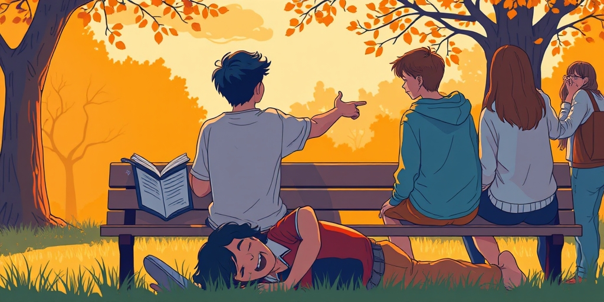
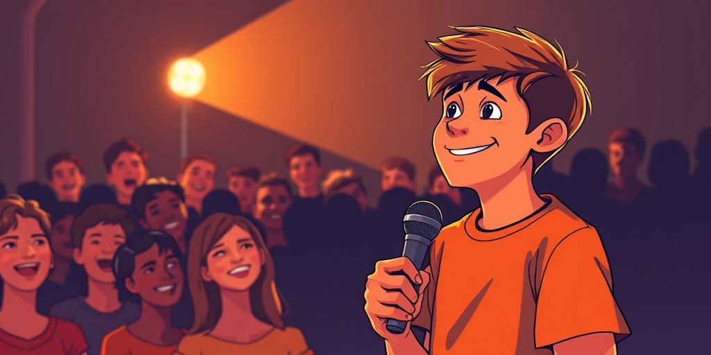
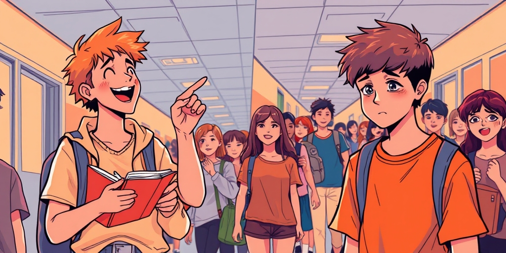
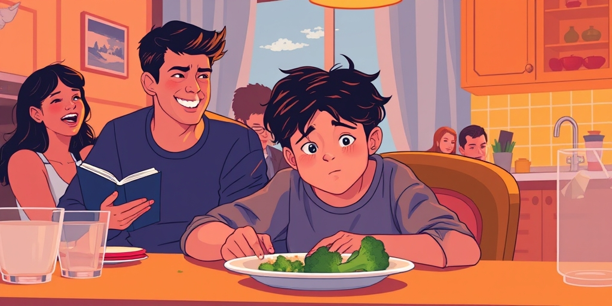

小汪老师的成长洞察 · 属于你的成长专栏
陈佩斯在《喜剧的忧伤》里拆穿了一个残酷真相：我们发笑，不是因为共鸣，而是因为我们确认了自己不是台上那个出丑的人。这层优越感，才是笑声的第一推动力。

你对着屏幕哈哈大笑时，到底在笑什么？一个短视频，演员笨拙地摔倒，评论区一片“哈哈哈哈”。我们脱口而出的解释是“太好笑了”。但喜剧大师陈佩斯给出了一个冷峻的答案：你笑，是因为你对那个摔倒的人，产生了优越感。
这颠覆了我们对幽默的浪漫想象。我们以为笑声是快乐的分泌物，是智慧的回响。但现实是，笑话的“笑点”，常常建立在某种“不对等”之上：某人比你蠢，比你倒霉，比你没见识，或者比你更倒霉。算法精准地为你推送这些，让你安全地、持续地确认“我和那种人不一样”。朋友圈里转发的段子，也大多在完成同一个社交动作：我认同这个笑话，我划清了我与笑话中那种人的界限。

这就引出了陈佩斯课程名中那个刺眼的词：忧伤。如果笑声机制的核心是观众的优越感，那么喜剧演员，就是那个自愿站上舞台、主动成为被俯视对象的人。他每一次的挤眉弄眼、故意犯蠢、承受捉弄，都是在进行一场“自我矮化”的表演。
掌声雷动，笑声震耳。对他而言，这意味着什么？意味着他当下的表演，成功地让自己“变得很弱”，从而有效地激发了观众的优越感。笑声越响，他被俯视得越彻底。这种日复一日、场场如此的表演，与真实的自我之间，必然存在巨大的撕裂。这或许为“喜剧演员常与抑郁为伴”提供了一种结构性解释——那不只是个人性格问题，而是一种职业带来的、系统性的情感耗竭。

并非所有人都能平等地成为笑话的主角。翻开喜剧的历史，你会发现一个规律：稳定的“笑料提供者”，往往是那些在社会权力结构中处于较低位置的人。方言口音的、身材肥胖的、来自特定地域的、经济拮据的群体，他们承受了最多的笑声。
这并非偶然。优越感需要对比才能产生。你所嘲笑的对象，必须在一个你已具备心理优势的维度上“不如你”。因此，喜剧的生产，在无形中消费并再生产了社会的权力梯度。当观众说“我没有歧视，就是觉得好笑”时，他可能恰恰是在无意识中，享受了社会结构赋予他的那份“不必被嘲笑”的安全地位。笑声，成了权力感的一种隐秘确认。

将视角拉回家庭，这个机制依然成立。父母对孩子那些看似无害的“玩笑”，常常是优越感的精准投放。“这都不会？”“你看看别人家孩子！”“你小时候那点糗事……”这些话伴随着笑声说出，但内核是一次次温和的权力展示：我是对的，你是错的；我是指导者，你是受训者。
孩子在这种笑声中长大，内心会被植入一套怎样的认知模式？他们可能内化了“我是被俯视的”这一身份，并在未来寻找更弱的对象，来转移和代偿这种感受。笑，作为一种低成本的情绪调节和权力获取手段，就这样在代际之间悄然传递。那个在家庭饭桌上被善意取笑的孩子，未来很可能在办公室里，用类似的方式对待新来的实习生。
写给你的话
下次当你笑得前仰后合，不妨给自己按下暂停键。一秒就够。问一句：我在笑什么？被我笑的那个人，是真的愚蠢可笑，还是仅仅处在了一个比我更脆弱、更倒霉、更无力的位置上？
承认自己在享受俯视，比承认自己有幽默感要困难得多。前者需要直面人性中不太光彩的部分。但真正的幽默感，或许恰恰始于这份清醒。它不需要踩着谁来证明自己的高度。
小汪老师的成长洞察 · 属于你的成长专栏